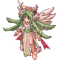
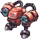
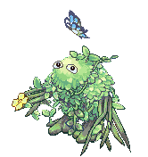
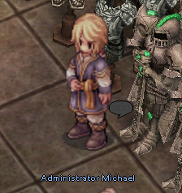
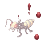
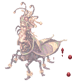
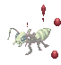
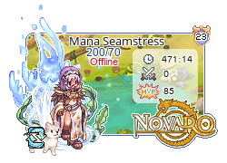
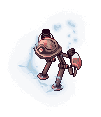
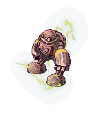

File list
Jump to navigation
Jump to search
This special page shows all uploaded files.
{kind=link}
{kind=link}
| Date | Name | Thumbnail | Size | User | Description | Versions |
|---|---|---|---|---|---|---|
| 02:28, 18 December 2021 | Terremotus.gif (file) |  |
33 KB | Randomced859 | 1 | |
| 02:30, 18 December 2021 | Procella.gif (file) |  | 44 KB | Randomced859 | 1 | |
| 02:32, 18 December 2021 | DualCannon.gif (file) |  | 9 KB | Randomced859 | 1 | |
| 02:34, 18 December 2021 | BattleWarrior.gif (file) |  |
16 KB | Randomced859 | 1 | |
| 02:36, 18 December 2021 | Infinity.gif (file) |  |
36 KB | Randomced859 | 1 | |
| 02:38, 18 December 2021 | MotherNet.gif (file) |  |
14 KB | Randomced859 | 1 | |
| 02:39, 18 December 2021 | Creeper.gif (file) |  | 42 KB | Randomced859 | 1 | |
| 02:41, 18 December 2021 | HellTree.gif (file) |  |
31 KB | Randomced859 | 1 | |
| 02:42, 18 December 2021 | Woodenfairy.gif (file) |  |
35 KB | Randomced859 | 1 | |
| 02:44, 18 December 2021 | Woodenwarrior.gif (file) |  |
23 KB | Randomced859 | 1 | |
| 23:21, 22 December 2021 | Custom headgear quests.png (file) | 6 KB | I Know To Write | 1 | ||
| 23:22, 22 December 2021 | Mh icon.png (file) | 3 KB | I Know To Write | 1 | ||
| 20:35, 26 December 2021 | Eden-Boya.png (file) |  |
89 KB | I Know To Write | 2 | |
| 20:37, 26 December 2021 | Eden-Michael.png (file) |  | 107 KB | I Know To Write | 2 | |
| 20:42, 26 December 2021 | Eden-Ur.png (file) |  |
100 KB | I Know To Write | 2 | |
| 20:44, 26 December 2021 | Eden-Toren.png (file) |  |
101 KB | I Know To Write | 2 | |
| 20:50, 26 December 2021 | EdenHQMain.jpg (file) |  |
98 KB | I Know To Write | 2 | |
| 22:44, 6 January 2022 | SpamEDSP.gif (file) |  |
4.95 MB | G00suede | 1 | |
| 18:50, 19 January 2022 | Cutedragonknight.gif (file) |  |
8.94 MB | Nithraniel | 1 | |
| 19:30, 19 January 2022 | Dbknightskills.png (file) |  |
10 KB | Nithraniel | 1 | |
| 19:30, 19 January 2022 | Dbrkskills.png (file) |  |
22 KB | Nithraniel | 1 | |
| 05:55, 2 February 2022 | ILL ANDRE LARVA.gif (file) |  |
6 KB | Egg | 1 | |
| 05:55, 2 February 2022 | ILL ANT EGG.gif (file) |  |
17 KB | Egg | 1 | |
| 05:55, 2 February 2022 | ILL ANDRE.gif (file) |  | 7 KB | Egg | 1 | |
| 05:55, 2 February 2022 | ILL FARMILIAR.gif (file) | 11 KB | Egg | 1 | ||
| 05:56, 2 February 2022 | ILL GIEARTH.gif (file) | 41 KB | Egg | 1 | ||
| 05:56, 2 February 2022 | ILL MAYA.gif (file) |  | 62 KB | Egg | 1 | |
| 05:56, 2 February 2022 | ILL PIERE.gif (file) |  | 16 KB | Egg | 1 | |
| 05:56, 2 February 2022 | ILL SOLDIER ANDR.gif (file) |  |
12 KB | Egg | 1 | |
| 05:57, 2 February 2022 | ILL VITATA.gif (file) | 5 KB | Egg | 1 | ||
| 05:57, 2 February 2022 | ILL DENIRO.gif (file) | 7 KB | Egg | 1 | ||
| 21:17, 2 February 2022 | Illutwins.jpg (file) |  |
8 KB | I Know To Write | 1 | |
| 13:48, 12 February 2022 | ShieldBuildRG.gif (file) |  |
7.8 MB | G00suede | 1 | |
| 01:03, 14 February 2022 | OBRG.gif (file) |  |
2.63 MB | G00suede | 1 | |
| 02:07, 23 February 2022 | BmwSig.png (file) |  |
57 KB | Melzdash | 1 | |
| 02:09, 23 February 2022 | ManaSig.png (file) |  | 55 KB | Melzdash | 1 | |
| 02:11, 23 February 2022 | AmaSig.png (file) |  |
41 KB | Melzdash | 1 | |
| 02:16, 23 February 2022 | AisSig.png (file) | 55 KB | Melzdash | Reverted to version as of 02:03, 23 February 2022 (UTC) | 3 | |
| 02:17, 23 February 2022 | AisikirinS.png (file) |  |
60 KB | Melzdash | 1 | |
| 02:20, 23 February 2022 | SophSig.png (file) |  |
50 KB | Melzdash | 1 | |
| 02:22, 23 February 2022 | YulySig.png (file) |  |
64 KB | Melzdash | 1 | |
| 15:47, 1 March 2022 | JF venatu p.gif (file) |  |
19 KB | Tokeiburu | 1 | |
| 15:55, 1 March 2022 | JF venatu h.gif (file) |  |
19 KB | Tokeiburu | 1 | |
| 15:55, 1 March 2022 | JF venatu d.gif (file) |  |
21 KB | Tokeiburu | 1 | |
| 15:55, 1 March 2022 | JF venatu g.gif (file) |  | 19 KB | Tokeiburu | 1 | |
| 15:58, 1 March 2022 | JF dimik p.gif (file) |  |
37 KB | Tokeiburu | 1 | |
| 15:58, 1 March 2022 | JF dimik h.gif (file) |  | 36 KB | Tokeiburu | 1 | |
| 15:58, 1 March 2022 | JF dimik d.gif (file) |  |
40 KB | Tokeiburu | 1 | |
| 15:58, 1 March 2022 | JF dimik g.gif (file) |  |
36 KB | Tokeiburu | 1 | |
| 16:02, 1 March 2022 | JF apocalips br.gif (file) |  |
126 KB | Tokeiburu | 1 |
{kind=link}
{kind=link}
{kind=link}
{kind=link}
{kind=link}
{kind=link}
{kind=link}
{kind=link}
{kind=link}
{kind=link}